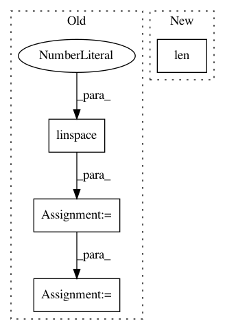

aa6af82f458acf3f853e5174d34b11d319eea1c0,unbalanced_dataset/under_sampling/instance_hardness_threshold.py,InstanceHardnessThreshold,transform,#InstanceHardnessThreshold#Any#Any#,189
Before Change
mask = probabilities >= self.threshold
elif self.kind_sel == "maj":
ratios = np.zeros(100, )
probs = np.linspace(0., 1., 100)
for i, p in enumerate(probs):
ratios[i] = self.stats_c_[self.min_c_] / np.count_nonzero(np.logical_or(probabilities >= p, y == self.min_c_))
ratios = np.abs(ratios - self.ratio)
threshold = probs[ratios.argmin()]
mask = np.logical_or(probabilities >= self.threshold, y == self.min_c_)
X_resampled = X[mask]
y_resampled = y[mask]
After Change
mask = probabilities >= self.ratio_
elif self.kind_sel == "maj":
min_count = np.sum(y == self.min_c_)
max_count = len(y) - min_count
rem_count = max_count - (min_count / self.ratio_)
threshold = np.percentile(probabilities[y != self.min_c_],
In pattern: SUPERPATTERN
Frequency: 3
Non-data size: 4
Instances
Project Name: scikit-learn-contrib/imbalanced-learn
Commit Name: aa6af82f458acf3f853e5174d34b11d319eea1c0
Time: 2016-06-17
Author: victor.dvro@gmail.com
File Name: unbalanced_dataset/under_sampling/instance_hardness_threshold.py
Class Name: InstanceHardnessThreshold
Method Name: transform
Project Name: has2k1/plotnine
Commit Name: d695f661f194ba222386ac4848ac259814de3e49
Time: 2014-04-29
Author: has2k1@gmail.com
File Name: ggplot/geoms/geom_abline.py
Class Name: geom_abline
Method Name: _plot_unit
Project Name: deepchem/deepchem
Commit Name: b83aeb11f157d41805114f1b58e65c172a67c6f0
Time: 2017-08-21
Author: proteneer@gmail.com
File Name: deepchem/trans/transformers.py
Class Name: ANITransformer
Method Name: transform_array